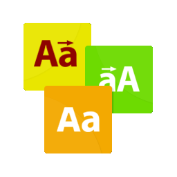

<ion-app>
  <ion-menu menuId="first" contentId="main" [side]="side">
    <ion-content>
      <div class="menu-heder-bg">
        <div class="header-content">
          
        </div>
      </div>
      <ion-list class="menu-items" lines="none">
        <ion-item>
          <ion-label>Night mode</ion-label>
          <ion-toggle
            slot="end"
            [(ngModel)]="mode"
            (ionChange)="togglrTheme($event)"
          >
          </ion-toggle>
        </ion-item>
      </ion-list>
    </ion-content>
  </ion-menu>

  <ion-buttons class="ionbuttonsMenu" collapse="true">
    <ion-button
      style="margin-top: 10px"
      class="ionbuttonMenu"
      (click)="openMenu()"
    >
      <ion-icon slot="icon-only" name="menu"></ion-icon>
    </ion-button>
  </ion-buttons>

  <ion-router-outlet id="main"></ion-router-outlet>
</ion-app>
